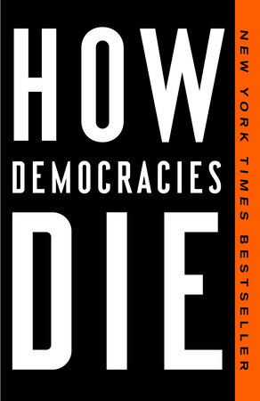
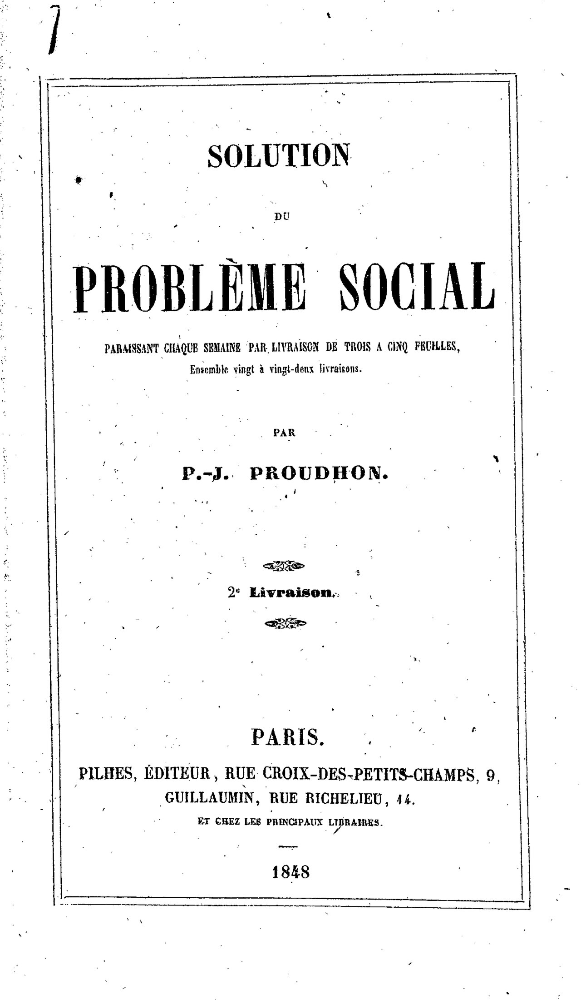
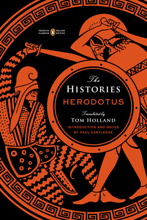
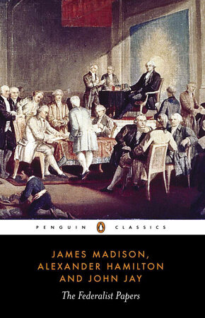
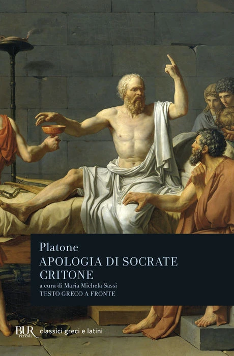
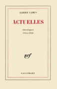
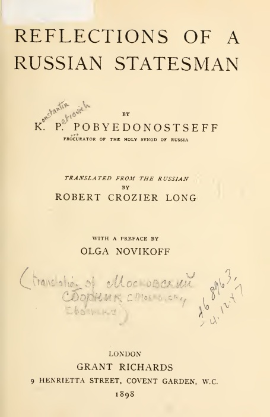
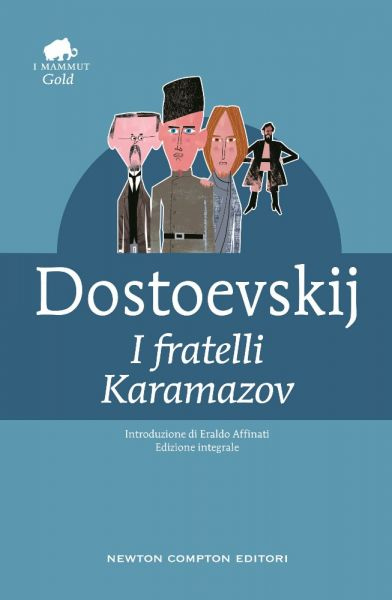

42:59 · 14 OPERE
Some notes on Athenian Democracy.
Il filo del discorso
Il relatore propone una discussione in inglese sulla distanza fra la partecipazione politica ateniese e la rappresentanza contemporanea. Parte dalla parola democrazia, poi ricostruisce il ruolo dei demi, dell’assemblea e del consiglio, le condizioni della cittadinanza e le esclusioni che delimitavano il corpo politico. L’immagine del cerchio serve a rappresentare la decisione fra cittadini, contrapposta alla piramide del comando.
Leggi la sintesi completaRiduci la sintesi
Attraverso Temistocle, Tucidide e i dialoghi di Platone affronta però un problema interno a quel modello: come decidere su ciò che non si conosce, evitando che la persuasione sostituisca il giudizio? Proudhon, Madison e Pobedonostsev introducono diverse critiche della delega politica; il finale insiste sulla formazione, o paideia, come condizione di una partecipazione consapevole. La scheda distingue questa lettura critica dai dati istituzionali e cronologici: non confonde tutti i residenti con i cittadini, il numero dei partecipanti con l’intero elettorato, la repubblica con l’assenza necessaria di democrazia o un episodio diplomatico con l’unica causa della caduta di Atene.
I libri nel discorso

How Democracies Die
Identificazione probabile
Note sul riferimento
Copertina: Crown, 16 gennaio 2018, 320 pagine, ISBN 9781524762957. Edizione inglese di riferimento, non certificata come esemplare sfogliato.
Immagine autentica dell’opera, controllata visivamente; l’edizione di riferimento non è attribuita al filmato.
Due studiosi di Harvard e incipit Is our democracy in danger?: identificazione probabile con Levitsky e Ziblatt, titolo non letto.

Costituzione degli Ateniesi
Identificazione probabile
Note sul riferimento
Copertina: Fondazione Lorenzo Valla/Mondadori,3 novembre 2016,472 pagine nel catalogo editoriale, a cura di P. J. Rhodes, traduzione di Andrea Zambrini, Tristano Gargiulo e P. J. Rhodes, ISBN 9788804671695. Copertina verde chiaro con disco per il voto. Edizione non identificata nel video.
Immagine autentica dell’opera, controllata visivamente; l’edizione di riferimento non è attribuita al filmato.
Ricostruzione di riforme, iscrizione nei demi, consiglio e dokimasia: probabile fonte istituzionale Ath.Pol., titolo e autore non letti.

La Démocratie
Note sul riferimento
Frontespizio della raccolta: Solution du problème social, seconda livraison, Paris, Pilhes e Guillaumin,1848; capitolo II, La Démocratie, datato26marzo 1848, pagine49–119 nella fonte trascritta.
Riproduzione autentica e integrale del frontespizio della seconda livraison 1848 di Solution du problème social, contenente La Démocratie; non copertina autonoma del capitolo.
Proudhon, La Démocratie 1848 e frase sull’aristocrazia mascherata espliciti, testo riscontrato nel capitolo della seconda livraison.

Costituzione degli Ateniesi
Identificazione probabile
Note sul riferimento
Copertina: Fondazione Lorenzo Valla/Mondadori,5 settembre 2018,312 pagine, a cura di Giuseppe Serra, con un saggio di Luciano Canfora, ISBN 9788804688839. Copertina verde chiaro con rilievo di rematori. La datazione antica e la paternità restano discusse; non si rende certo un autore individuale.
Immagine autentica dell’opera, controllata visivamente; l’edizione di riferimento non è attribuita al filmato.
Vecchio Oligarca e passo sulla condizione degli schiavi in Atene, compatibile con I10–12; titolo non letto.

Storie (The Histories)
Note sul riferimento
Copertina: Penguin Classics Deluxe Edition,19 maggio 2015,880 pagine, traduzione Tom Holland, introduzione e note Paul Cartledge.
Immagine autentica dell’opera, controllata visivamente; l’edizione di riferimento non è attribuita al filmato.
Erodoto, confronto dei regimi e opera sulle guerre persiane; allusione anche al racconto del Laurio e di Temistocle.

Costituzione degli Stati Uniti d’America
Note sul riferimento
Copertina della raccolta: Testo firmato il17settembre1787. Per l’immagine si usa la raccolta Penguin Classics The Federalist Papers, ISBN 9780140444957, che dichiara di includere il testo della Costituzione; non è una fotografia della pergamena originaria.
Copertina autentica di The Federalist Papers: la descrizione editoriale attesta che la raccolta comprende il testo completo della Costituzione. Non è il frontespizio costituzionale del 1787 e Hamilton, Madison e Jay non sono presentati come unici autori del documento.
USConstitution e sistema costituzionale espliciti; testo originario e riforma del Senato distinti.
Federalist No. 10
Note sul riferimento
Copertina della raccolta: Saggio apparso nel New York Packet il23novembre1787. Immagine della raccolta Penguin Classics The Federalist Papers, ISBN 9780140444957, a cura di Isaac Kramnick,528 pagine.
Copertina della raccolta di Hamilton, Madison e Jay, contenente il Federalist No.10. Il saggio specifico è di Madison, non a tre firme; edizione non identificata nel video.
James Madison, Federalist e numero10 espressamente nominati.

Apologia di Socrate
Identificazione probabile
Note sul riferimento
Copertina del volume Apologia di Socrate. Critone: BUR · Apologia di Socrate. Critone · a cura di Maria Michela Sassi, 1993
Copertina autentica del volume BUR contenente Apologia di Socrate e Critone. Il secondo titolo non è aggiunto come citazione del video; l’autore del testo è Platone, con Socrate come figura protagonista.
Responso di Delfi sulla sapienza di Socrate e ricerca presso chi presume di sapere: probabile Apologia20e–23b, non tutti gli esempi provengono dallo stesso dialogo.

La guerra del Peloponneso
Note sul riferimento
Copertina: Einaudi-Gallimard · Biblioteca della Pléiade · 1997
Copertina autentica controllata visivamente. Edizione di riferimento, non identificata come quella usata nel video.
Tucidide e guerra del Peloponneso espliciti; Corcira/Corinto libro I32–45 e successivo richiamo a Pericle.

Actuelles I. Chroniques1944–1948
Identificazione probabile
Note sul riferimento
Copertina: Gallimard, collana Blanche, prima pubblicazione30giugno 1950,272 pagine nel catalogo, ISBN 9782070212088. Copertina del primo volume, non di Actuelles II o IV.
Copertina Gallimard del volume Actuelles, chroniques 1944–1948.
Camus e macchina della disperazione; probabile rimando ad Actuelles I e alla risposta a Gabriel Marcel, titolo non pronunciato.

Reflections of a Russian Statesman
Identificazione probabile
Note sul riferimento
Frontespizio dell’edizione: London, Grant Richards,1898, traduzione dal russo di Robert Crozier Long, prefazione di Olga Novikoff. Frontespizio della copia digitalizzata dalla University of Toronto.
Frontespizio integrale del volume inglese 1898, pagina PDF9 della digitalizzazione322 pagine, non copertina esterna né edizione verificata come esemplare del video. Conservate annotazioni e segni della copia.
Pobedonostsev, The New Democracy e lettura sui voti: corrispondenza con pagine26–27 della traduzione 1898, titolo del volume non letto.

Minima moralia
Note sul riferimento
Copertina: Einaudi, 2015
Adorno e Minima moralia espliciti; parafrasi sull’evidenza logica non localizzata con numero di aforisma verificato.

I fratelli Karamazov
Note sul riferimento
Copertina: Newton Compton · I Mammut Gold · edizione di riferimento
Dostoevskij, Karamazov e Grande Inquisitore espliciti; l’ipotesi di un modello biografico non è una attribuzione certificata.

Gorgia
Note sul riferimento
Copertina: Gorgia, Bompiani, giugno 2001, a cura di Giovanni Reale, testo greco a fronte, 384 pagine, ISBN 9788845291111. Copertina ufficiale blu, bianca e verde acqua con titolo e autore; edizione di riferimento non identificata nel video.
Immagine autentica dell’opera, controllata visivamente; l’edizione di riferimento non è attribuita al filmato.
Platone e Gorgia espliciti; scena del medico, cuoco e bambini localizzata redazionalmente a521e–522a.